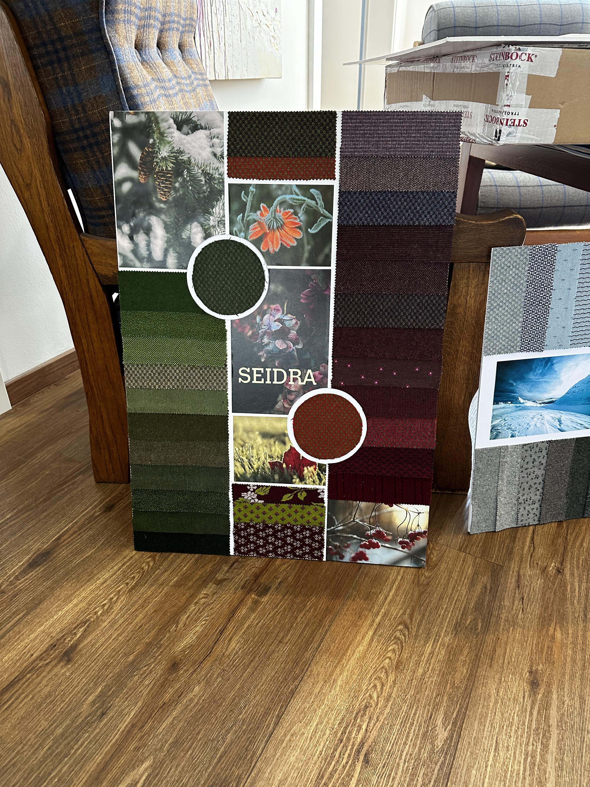
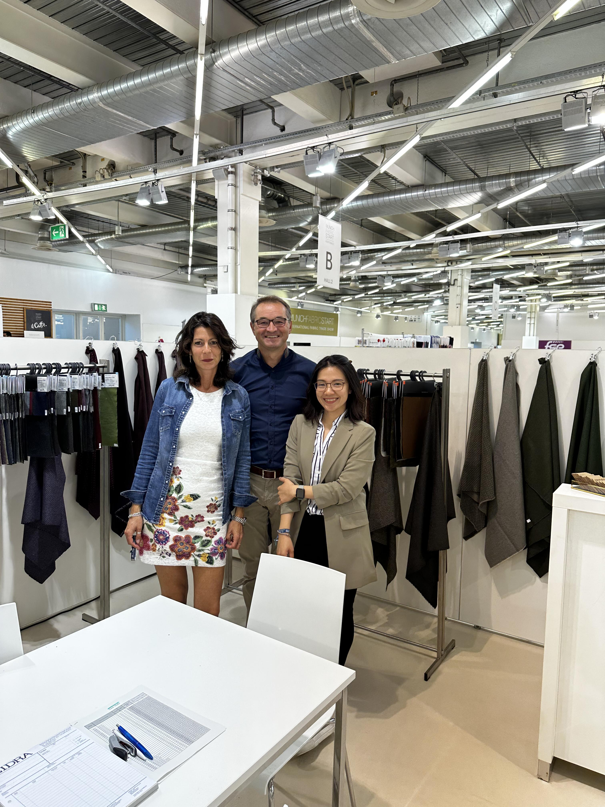

Track Record · Pre-AI Foundation
Visual Evidence
Five artifacts from Seidra Textilwerke's Munich Fabric Start participation across the 8-edition arc. The fair runs twice a year (spring/summer and autumn/winter); these images are from the editions where the playbook was most legibly in operation.




What each image is doing. The wide booth and signage shots establish authenticity: real participation, real hall location, real branded display. The mood-board card is the artifact-level proof of the R&D phase — the kind of color-direction document that AI-assisted prediction (editions 6–8) compressed in time, not in role. The fabric weave detail demonstrates the photographic restraint the brand carried into product photography. The team shot grounds the work in operations rather than presentation: this is what a working trade-fair team looks like, not a hero photograph.